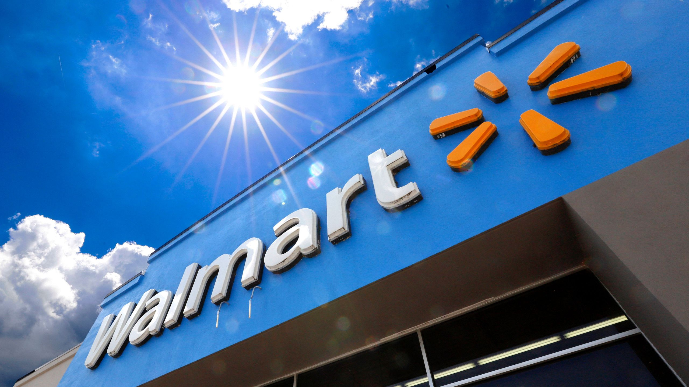

Sales Data Analysis using Excel
Objective: Analyzed sales data to uncover insights and trends.
Tools Used: Excel
Key Contributions:
- Created pivot tables to summarize sales by region, product, and customer segment.
- Designed interactive charts to visualize trends and performance metrics.
- Performed data cleaning and formatting for accurate analysis.
Outcome: Delivered actionable insights through comprehensive visualizations.
Walmart Retail Sales Analysis with Python

Objective: Explored and visualized Walmart retail sales data.
Tools Used: Python, Jupyter Notebook, Pandas, NumPy, Matplotlib, Seaborn
Key Contributions:
- Processed and cleaned data using Pandas, handling missing values and outliers.
- Conducted exploratory data analysis (EDA) to identify key sales trends.
- Visualized sales metrics using Matplotlib and Seaborn.
Outcome: Gained hands-on experience in Python for data analysis.